遊びで植物を育てよう
2022/05/08
母の日のバラ。
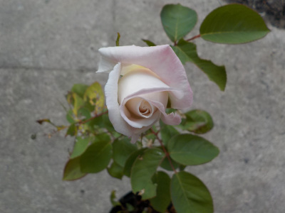
一昨年挿し木したバラがもうちょっとで咲きます。たぶん明日は咲くでしょう。
今の状態でも十分キレイですね。
バラは母の日の見頃になるので、母の日のプレゼントに向いていると思う。
【バラTOP】 【木TOP】 【園芸TOP】
2021/09/26
挿し木のバラを活用
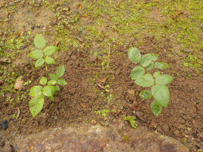
挿し木のバラが少し成長したので庭に2本並べて植えました。
来年の春には花が咲くだろうと思っています。
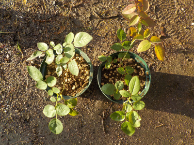
挿し木で増やしたバラがまだあって、大きくなったものを2本ずつ大きな鉢に植えました。
一度に沢山増やすと置場に困りますね。
【バラTOP】 【木TOP】 【園芸TOP】
2021/09/19
挿し木したバラが花を咲かせました。
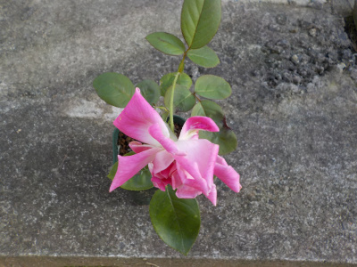
挿し木で増やしたバラで、まだ小さいですが花を咲かせていました。
小さくても花を付けるんですね。
鉢が小さいので、今度大きな鉢に植え替えしようと思います。
【バラTOP】 【木TOP】 【園芸TOP】
2021/05/09
今年は母の日くらいがバラのピークです。
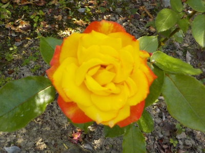
バラが咲きました。
数本あるんですが、それぞれ綺麗に咲いています。
今ぐらいが一番いい時期です。
【バラTOP】 【木TOP】 【園芸TOP】
2021/04/04
水挿しのバラっから芽が出ました。
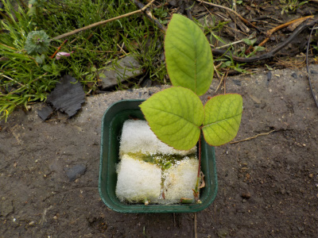
水で浸したウールマットに挿したバラから芽が出ました。
根っこもあったので土に植替えしました。
もうバラは沢山鉢上げしてて必要ないですが、捨てれないので育てます。
【バラTOP】 【木TOP】 【園芸TOP】
2021/03/28
バラの挿し木を鉢上げしました。
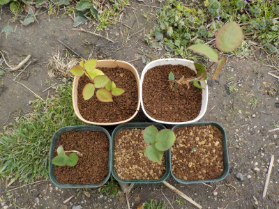
葉っぱが伸びて容器が窮屈になったので鉢上げしました。
一つは葉っぱが出ていないですが、根っこがしっかり出ていたので植えました。
【バラTOP】 【木TOP】 【園芸TOP】
2021/03/21
ペットボトルで挿木したバラが次々と葉を出しています。

挿木が沢山成功するのはうれしいですね。
植替え用の小さな鉢を準備して植え替えようと思います。
鉢の数がどんどん増えていくな。
【バラTOP】 【木TOP】 【園芸TOP】
2020/08/13
水挿しのバラに出っ張りが出来ていました。
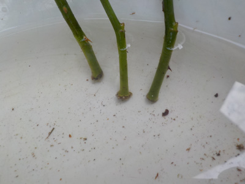
バラの切り口に小さな塊が出来ていました。
ここから根っこが出るんでしょうか。
水挿しですが、ボウフラが発生するのでやめることにしました。
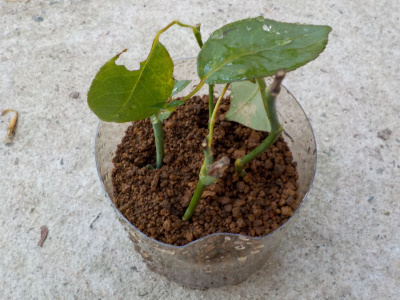
ペットボトルで育てます。
根っこがでるといいな。
【バラTOP】 【木TOP】 【園芸TOP】
2020/07/12
バラの花が終わった枝で水差しをしてみます。
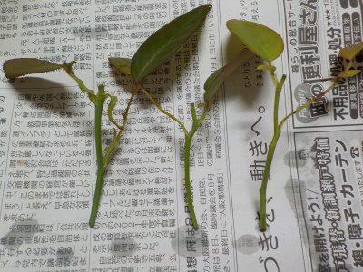
バラの花が終わったら切って捨てるんですけど、捨てずに水に差したら根っこが出ないかな？って思ったのでやってみます。
四季咲きで次々咲き終わったら切り取るので、何度でもやってみます。
挿し木もやってみようかな。
【バラTOP】 【木TOP】 【園芸TOP】
2020/05/04
今年もバラが綺麗です。

今年も暖冬だったせいか、花が大きいです。
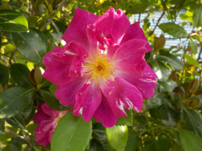
違う種類のバラも咲いていました。
綺麗な花を見ると数を増やしたい、種類を増やしたいって思いますね。
でも沢山種類があるので、どれにしようかと迷って買えずにいます。
【バラTOP】
【木TOP】
【園芸TOP】
買うなら白いバラかな。
【おいしいものを食べよう。】【たくさん寝よう。】
【ソロ活をしよう!】【季節感のあることをしよう。】【動画視聴はほどほどに。】【当サイトの全てのコンテンツは無断転載禁止です。】